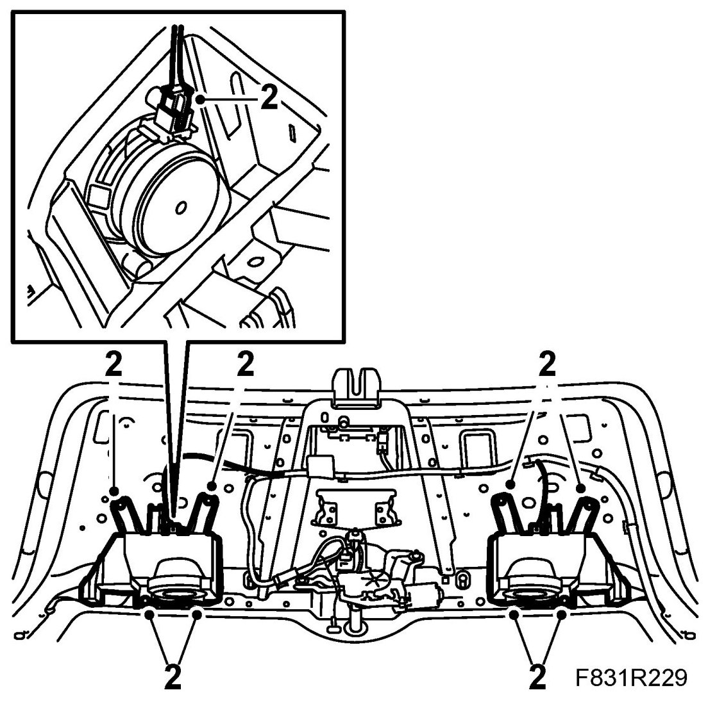
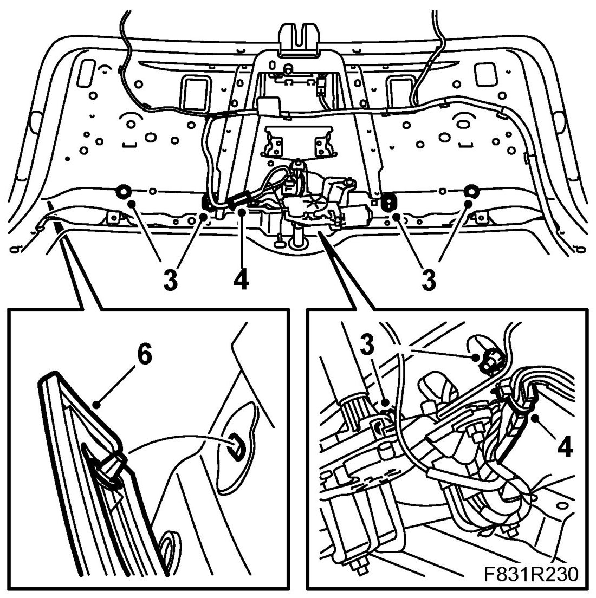
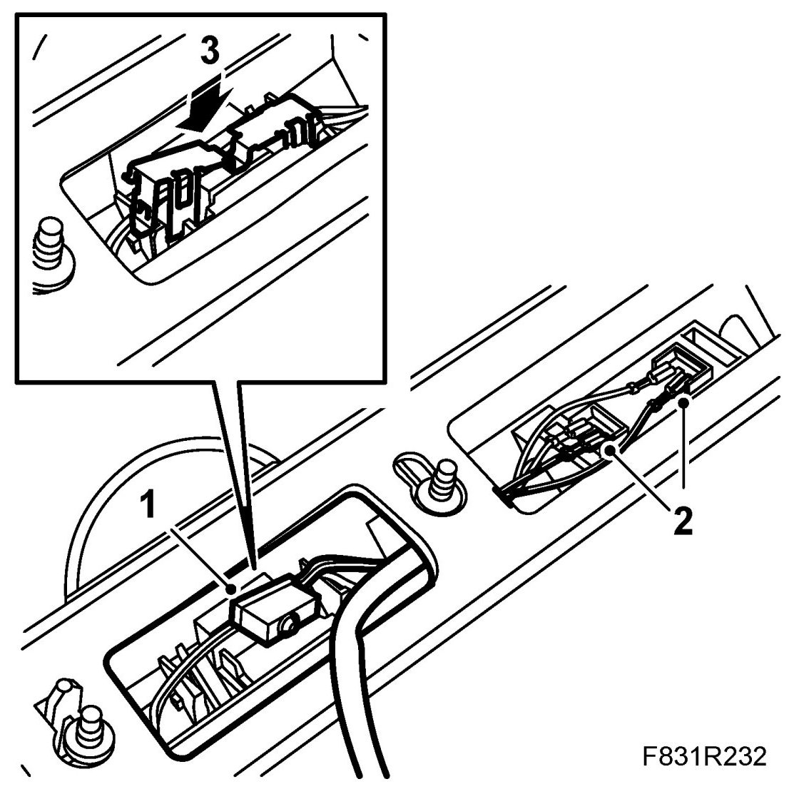
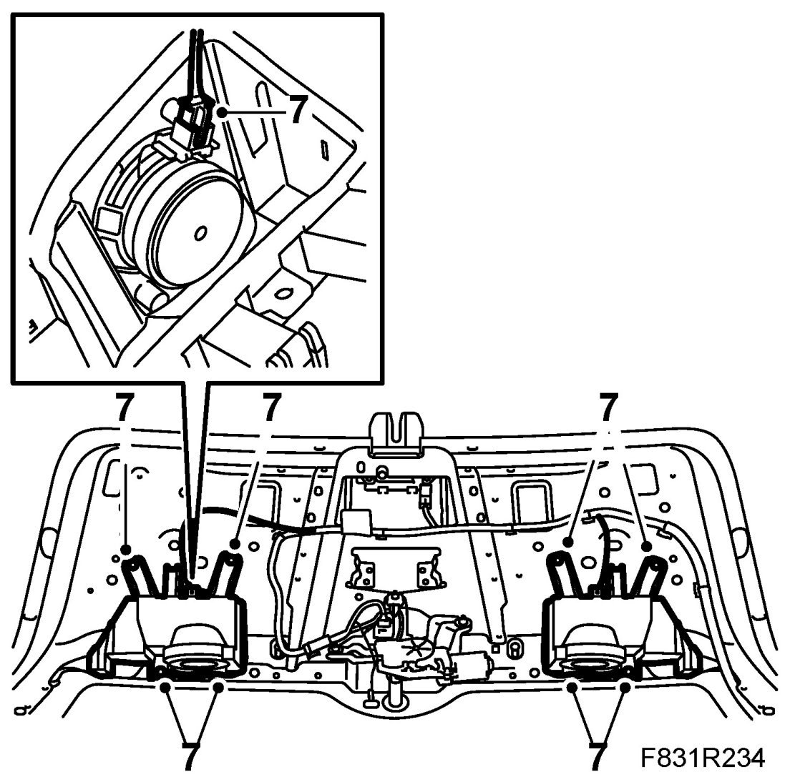

Tailgate, Microswitch, 5D
Tailgate, Microswitch, 5D
To remove
1. Remove Tailgate trim .
2. Remove the speaker holders.

3. Remove the nuts holding the moulding on the tailgate.

4. Unplug the connector.
5. Close the tailgate.
6. Pull out the moulding.
7. Remove the catch securing the microswitch using a screwdriver in the edge of the catch.
8. Unplug the flat pin connector to the microswitch.
9. Remove the microswitch with wiring harness.
To fit
1. Fit the microswitch.

2. Connect the flat pins.
3. Fit the catch securing the microswitch. Make sure it engages properly.
4. Fit the moulding to the tailgate.
5. Fit the nuts holding the moulding.
6. Fit the connector.
7. Remove the speaker holders. Plug in the connector.

8. Carry out a functional check.
9. Fit Tailgate trim .